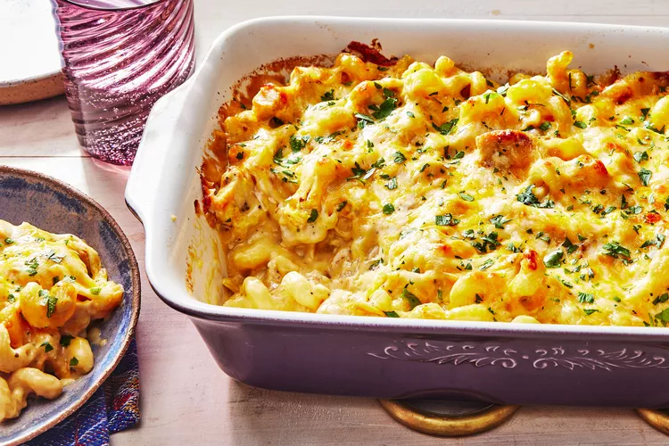

Home
Cheesy Chicken Casserole

Description
Whether for dinner or as a get-well offering to an ailing neighbor, this cheesy chicken casserole will be a favorite among the people lucky enough to eat it. This dish is incredibly creamy, with tender pasta and chicken making for a hearty dish that’s loaded with cheese. A little Parmesan lends nutty-salty depth, while the abundant colby Jack offers its excellent meltability and medium sharpness to the dish.
Learn how to make cheesy chicken casserole, and finish the meal with a side salad or roasted vegetables, depending on the season. Garlic bread is also a great idea.
Ingredients
- Uncooked cavatappi pasta
- Olive oil
- Yellow onion
- Skinless, boneless chicken breasts
- Garlic cloves
- Kosher salt and black pepper
- Cream of chicken soup
- Sour cream
- Colby Jack cheese
- Grated Parmesan
- Grated Parmesan
Steps
- Prepare the oven: Preheat the oven, and lightly coat a 13 x 9–inch baking dish with cooking spray.
- Cook pasta: Bring water to boil, and cook the pasta you're using according to the package's directions. Drain the pasta, but do not rinse.
- Cook chicken: Heat some of the olive oil in a large skillet, and cook the onion until tender. Add the chopped chicken, along with the garlic, and continue cooking until the pieces of chicken are cooked through.
- Add cheeses: After the chicken is cooked, add the soup, sour cream, and some of the cheeses to the chicken mixture, followed by all of the pasta.
- Bake casserole: Once the casserole mixture is combined, spoon it into the prepared baking dish. Top the mixture with the remaining cheese and bake until the cheese is melted and beginning to brown. Garnish with parsley, if using.